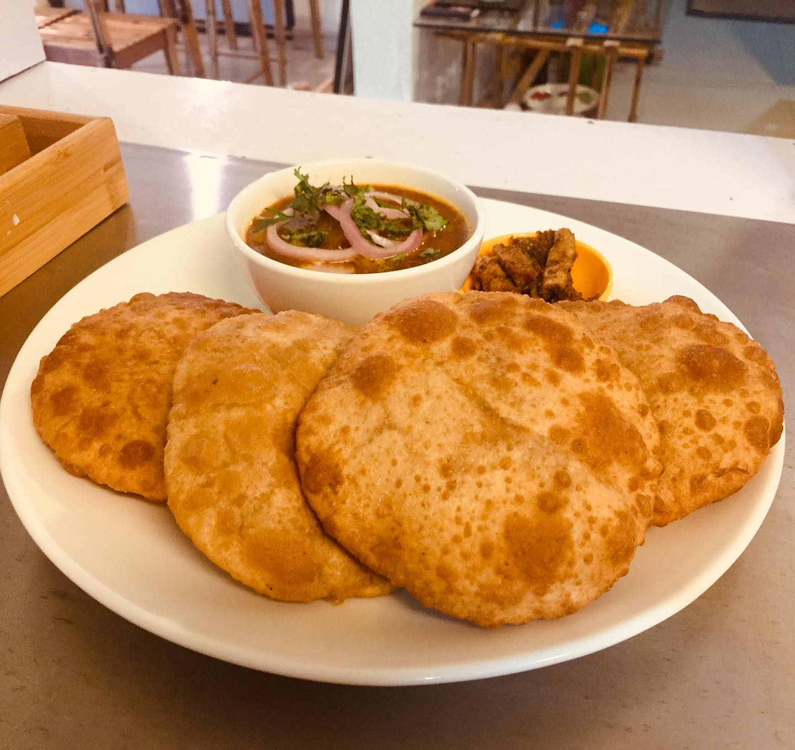

Dalpuri Recipe

Ingredients:
- For the dough:
- 2 cups all-purpose flour
- 1/2 teaspoon salt
- Water, as needed
- For the filling:
- 1 cup chana dal (split chickpeas), soaked for 2-3 hours
- 1 onion, finely chopped
- 2-3 green chilies, finely chopped
- 1 teaspoon ginger paste
- 1 teaspoon cumin powder
- 1 teaspoon coriander powder
- 1/2 teaspoon turmeric powder
- Salt to taste
- Oil for frying
Procedures:
- Prepare the dough:
- In a large bowl, mix the all-purpose flour and salt.
- Gradually add water and knead into a smooth dough. Cover with a damp cloth and let it rest for 30 minutes.
- Prepare the filling:
- Drain the soaked chana dal and grind it into a coarse paste without adding water.
- In a bowl, mix the dal paste with chopped onions, green chilies, ginger paste, cumin powder, coriander powder, turmeric powder, and salt.
- Assemble the puris:
- Divide the dough into small balls and roll each ball into a small disc.
- Place a spoonful of the dal filling in the center of each disc.
- Fold the edges of the disc to cover the filling and seal it well.
- Roll out each filled disc into a thin puri.
- Fry the puris:
- Heat oil in a pan over medium heat.
- Carefully place the puris in the hot oil and fry until golden brown and crispy on both sides.
- Remove from the oil and drain on a paper towel to remove excess oil.
- Serve hot:
- Serve the dal puris hot with a side of chutney or yogurt. Enjoy the crispy and flavorful lentil stuffed bread!
Comments: